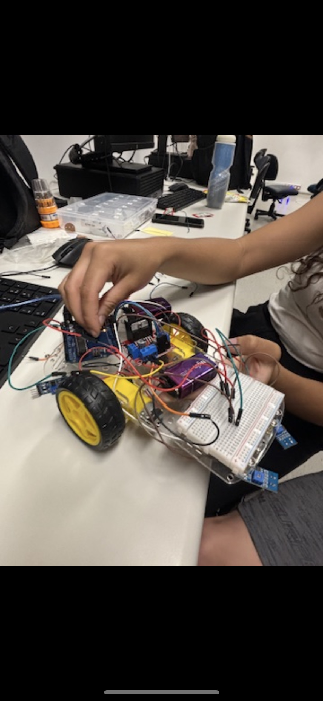
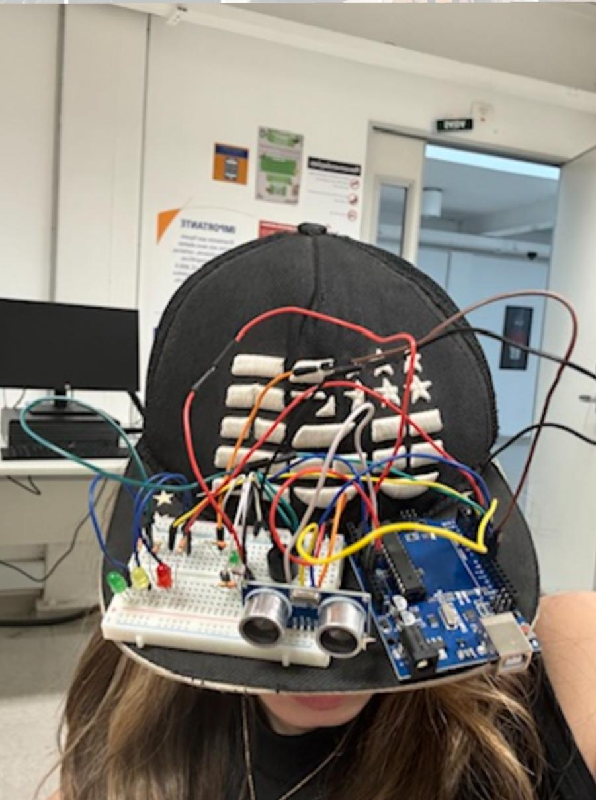

Área de IOT
Aqui veremos sobre algumas atividades que tivemos em IOT nesse último ano e que foram essenciais para hoje criar esse site!

Fotos do carrinho que desenvolvemos e programamos durante as aulas.

Mais fotos do carrinho desenvolvido em IOT.


Fotos do nosso boné criado nas aulas, onde as luzes mudam de cor conforme a proximidade de objetos.
Vídeo da nossa atividade com Arduíno, onde programamos um sistema de irrigação automático.